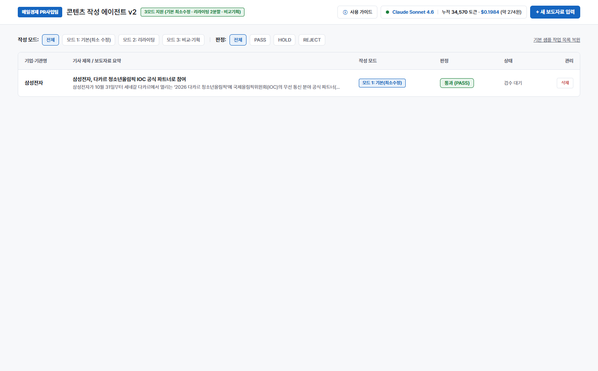
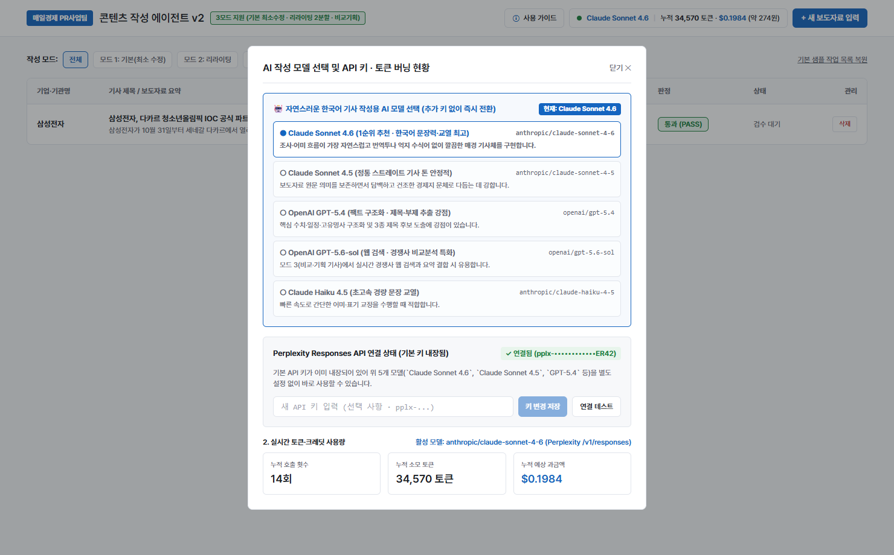
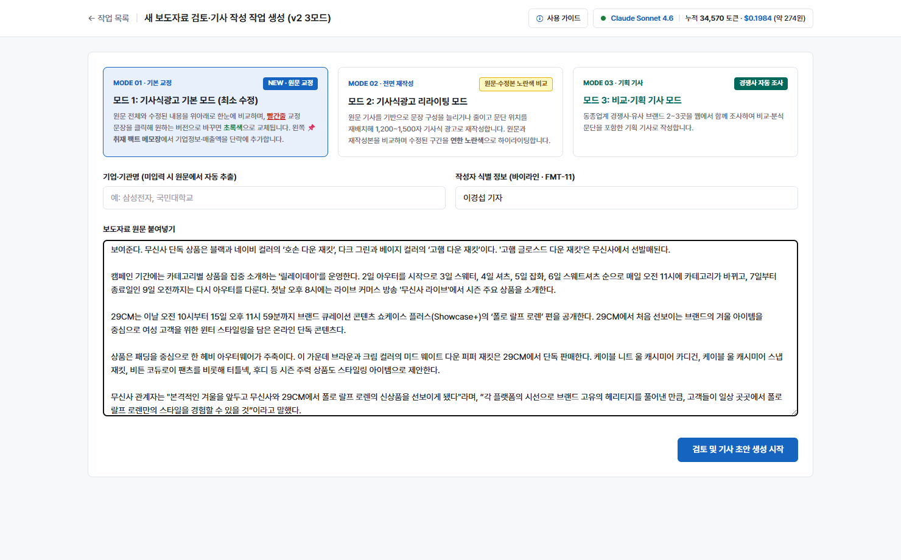
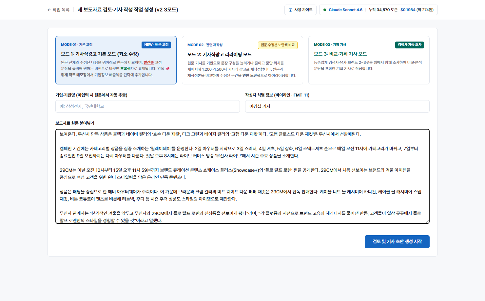
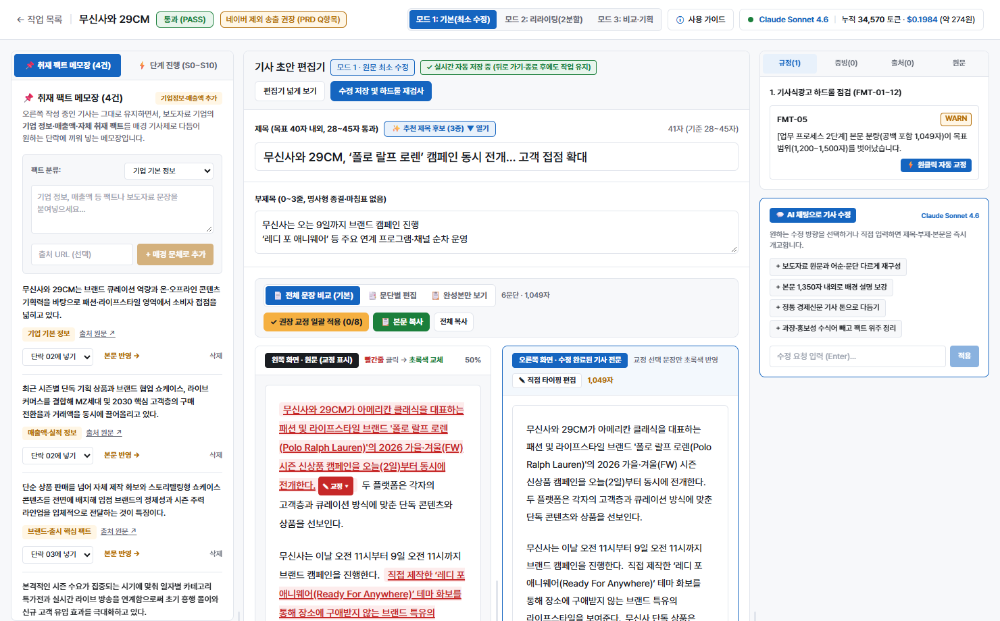
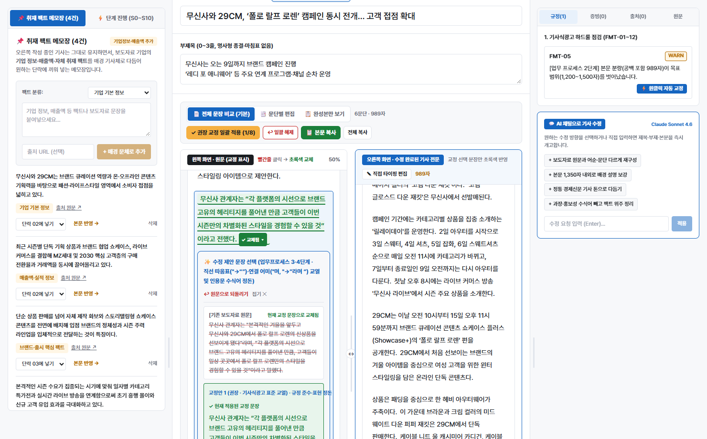
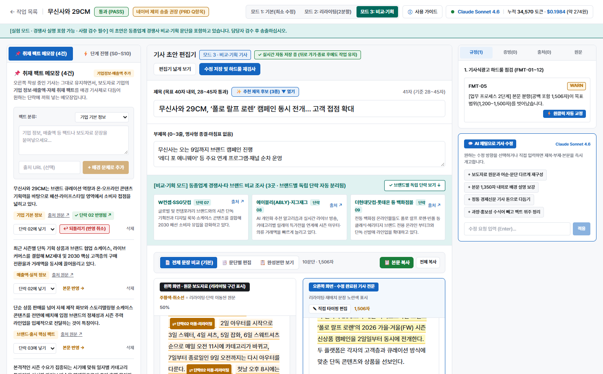
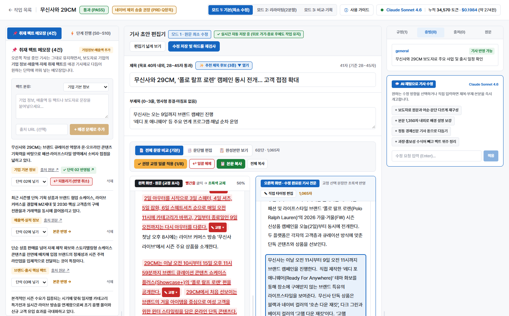
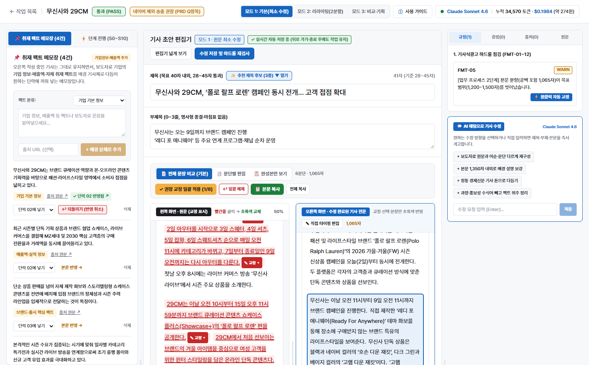
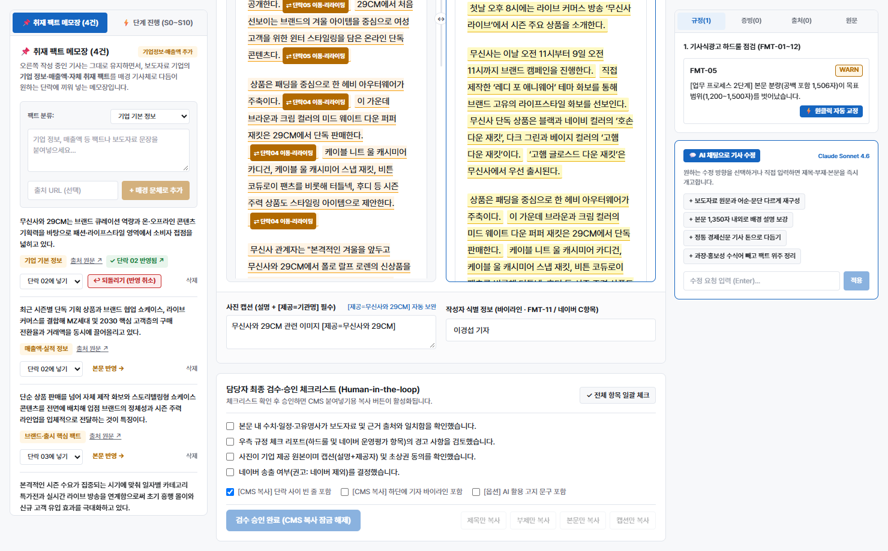

본 문서는 기업·대행사로부터 접수한 보도자료 원문을 붙여넣어 ① 모드 1(원문 최소 수정 · 빨간줄 문장별 교정안 선택 및 좌우 100% 실시간 동기화) → ② 모드 2(기사식광고 리라이팅 · 노란색 변경 구간 비교) → ③ 모드 3(동종업계 경쟁사 3곳 비교·기획 기사)로 작성하고, 취재 팩트 메모장과 AI 채팅 수정을 거쳐 CMS에 복사하기까지의 전 과정을 안내합니다.
우측 상단 [+ 새 보도자료 입력] 버튼을 클릭합니다. 상단 모델 바에서 Claude Sonnet 4.6 / GPT-5.4 / Gemini 3.1 Pro를 즉시 전환할 수 있습니다.
모드 1(최소 수정), 모드 2(리라이팅), 모드 3(비교·기획) 중 하나를 고르고 보도자료 원문을 붙여넣은 뒤 시작 버튼을 누릅니다.
왼쪽 원문 화면에서 ✎ 교정 ▾ 문장을 클릭해 실질적으로 다듬어진 교정안을 고르면 왼쪽·오른쪽 본문이 동시에 초록색으로 100% 반영됩니다.
좌측 [취재 팩트 메모장]으로 기업·매출 팩트를 원하는 단락에 원클릭 삽입하고, 우측 하단 [AI 채팅으로 기사 수정]으로 문체·분량을 즉시 개고합니다.
상단 [본문 복사] / [전체 복사]로 즉시 복사하거나, 하단 S10 필수 체크리스트 승인 후 [CMS 전체 텍스트 복사]로 출고합니다.
• 홈 화면 작업 목록 대시보드, 3모드별·판정별 필터, 실시간 자동 저장 배지(✓ 자동 저장됨)
• 추가 키 없이 즉시 전환 가능한 3대 AI 작성 모델(Claude Sonnet 4.6 / GPT-5.4 / Gemini 3.1 Pro) 및 토큰·비용 현황
• 새 보도자료 입력 화면의 3모드 선택 기준 및 기업명 자동 추출·바이라인·사진 캡션 옵션
• 모드 1 핵심: 왼쪽 원문 빨간줄(✎ 교정 ▾) 클릭 → 차별화된 교정안 선택 → 오른쪽 기사 전문 초록색 즉시 반영
• 교체 완료(✓ 교체됨 ▾) 카드 내 [기존 보도자료 원문] 취소선 대조 박스 및 원문 복원 기능
• 취재 팩트 메모장 단락 삽입, 모드 2·3 비교 뷰, 우측 하드룰 원클릭 자동 교정 및 AI 채팅 개고

기본 샘플 작업 목록 복원을 누르면 초기 예시 작업을 언제든 다시 불러올 수 있습니다.| 상태 / 버튼 | 실무 의미 및 동작 설명 |
|---|---|
| ✓ 자동 저장됨 (교정 N건 반영) | 편집기에서 문장 교정이나 본문 수정을 하면 별도 저장 버튼을 누르지 않아도 브라우저에 실시간 자동 저장되어 뒤로 가기 후에도 그대로 유지됩니다. |
| ✓ 승인 완료 | 하단 S10 필수 체크리스트 검수를 마치고 CMS 복사 잠금이 해제된 완료 작업입니다. |
| 글자 수 (공백포함) | 현재 기사 본문의 공백 포함 글자 수(목표 1,200~1,500자)를 목록에서 바로 확인합니다. |
| 삭제 | 우측 [삭제] 버튼 클릭 시 확인 창을 거쳐 해당 작업을 목록에서 즉시 제거합니다. |

pplx-...)로 교체하고 싶을 때만 입력란에 붙여넣고 [키 변경 저장] 또는 [연결 테스트]를 누르면 됩니다.
| 모드 구분 | 핵심 특징 및 언제 선택하는가? |
|---|---|
| MODE 01 기본 교정 · 최소 수정 실무 기본값 |
원문 문장·단락을 100% 그대로 보존하면서 교정이 필요한 문장만 빨간줄(✎ 교정 ▾)로 표시합니다. 사용자가 직접 클릭해 교정안을 고른 문장만 초록색으로 교체되므로 지맘대로 원문이 바뀌지 않습니다. |
| MODE 02 기사식광고 리라이팅 |
원문 기사를 바탕으로 문단 순서를 재배치하고 서술을 보강해 1,200~1,500자 스트레이트 기사로 재작성합니다. 원문 대비 수정된 구간을 연한 노란색으로 하이라이트합니다. |
| MODE 03 비교·기획 기사 |
단일 기업 홍보성 보도자료를 산업 트렌드 기획 기사로 격상시킵니다. 동종업계 타 브랜드·경쟁사 3곳을 함께 조사하여 각 경쟁사별 독립 문단 + 차별화 분석 문단을 자동 구성합니다. |
[기업명] 태그, 문두 주어(예: 무신사와 29CM가, 현대백화점은), 사진 제공처([제공=OO]), 인용문(OO 관계자는)을 분석해 어떤 업종의 보도자료든 기업명을 정확히 자동 추출합니다.\n)로만 된 원문이나 따옴표 안 마침표가 섞인 원문도 문단·문장 분리 엔진이 깨짐 없이 처리합니다.
이경섭 기자)이 입력되어 있으며 담당 기자명으로 자유롭게 수정할 수 있습니다.설명 문구 [제공=기업명] 형태로 자동 정리됩니다.
| 영역 위치 | 핵심 역할 및 주요 기능 |
|---|---|
| ① 상단 헤더 & 모드 스위치 |
• 작업 도중에도 [모드 1: 기본(최소 수정)] / [모드 2: 리라이팅(2분할)] / [모드 3: 비교·기획] 버튼을 눌러 즉시 모드를 전환할 수 있습니다. • 우측 상단 [사용 가이드] 버튼으로 언제든 매뉴얼을 확인하고 복귀합니다. |
| ② 좌측 패널 |
• 📌 취재 팩트 메모장 탭: 기업 기본 정보·매출액·출시 팩트를 원하는 단락에 원클릭 추가/제거합니다. • ⚡ 단계 진행 (S0~S10) 탭: 11단계 검수 결과를 확인합니다. |
| ③ 중앙 편집기 | • 추천 제목 후보(3종) 토글, 부제목, 좌우 2분할 비교 뷰(원문 ↔ 수정 완료 기사 전문), 문단별 편집, 완성본만 보기, 본문/전체 복사를 제공합니다. |
| ④ 우측 패널 |
• 상단: 규정(하드룰 원클릭 자동 교정) / 증빙 / 출처 / 원문 4개 탭 • 하단: 💬 AI 채팅으로 기사 수정 대화형 개고 패널 |
브라우저 창을 좁게 줄이거나 넓게 펼쳐도 버튼과 배지가 한 글자씩 세로로 깨지지 않고 깔끔하게 자동 줄바꿈됩니다. 또한 넓은 화면에서는 좌·우 패널 경계선(↔)과 본문 좌우 분할선(↔)을 마우스로 드래그해 원하는 비율로 넓혀 쓸 수 있습니다.

추천 교정안 1개만, 문체별 변형이 뚜렷하면 교정안 1 / 2 / 3을 제시하며, 하단 입력창에서 [직접 교체]도 가능합니다.[기존 보도자료 원문] 취소선 대조 박스[기존 보도자료 원문]이 함께 표시되어 원래 보도자료 문장이 무엇이었는지 즉시 비교할 수 있습니다.
단락 05, 단락 06, 단락 07)으로 나누어 서술한 뒤 마지막 단락에 대상 기업의 차별화 전략을 정리합니다.
작년 거래액 4조원 돌파)를 입력하고 [+ 매경 문체로 추가]를 누르면 격식 있는 신문 문장으로 자동 변환됩니다.단락 02에 넣기)을 고르고 누르면 오른쪽 기사 본문 해당 단락 끝에 초록색 배지(📌 기업 기본 정보)와 함께 즉시 삽입되며, 다시 누르면 깔끔하게 제거됩니다.
+ 보도자료 원문과 어순·문단 다르게 재구성
+ 본문 1,350자 내외로 배경 설명 보강
+ 정통 경제신문 기사 톤으로 다듬기
+ 과장·홍보성 수식어 빼고 팩트 위주 정리
마지막 인용문을 간접화법으로 바꿔줘)를 입력하고 Enter를 누르면 즉시 본문이 개고되며, [↩ 되돌리기]로 언제든 직전 버전으로 복구할 수 있습니다.
| 버튼 명칭 | 동작 설명 |
|---|---|
| 📄 전체 문장 비교 (기본) | 왼쪽(보도자료 원문 교정 표시)과 오른쪽(수정 완료된 기사 전문)을 나란히 비교하며 편집합니다. |
| 📑 문단별 편집 | 각 문단을 개별 입력창으로 나누어 [↑ 위로] / [↓ 아래로] 순서 이동 및 직접 타이핑 편집을 수행합니다. |
| 📋 완성본만 보기 | 교정 하이라이트 없이 최종 출고될 깔끔한 기사 전문만 넓게 확인합니다. |
| 📋 본문 복사 / 전체 복사 | 편집 중인 기사 본문 또는 [제목+부제+본문+캡션+바이라인] 전체를 클립보드에 즉시 복사합니다. |
✓ 승인 완료로 기록되며, 우측 CMS 전체 텍스트 복사 버튼이 활성화되어 서식 없는 순수 텍스트로 안전하게 복사됩니다.실무자가 원문을 확인하기도 전에 AI가 임의로 문장을 바꿔버리면 어떤 문장이 바뀌었는지 혼란스럽기 때문입니다. 모드 1에서는 교열이 필요한 문장을 빨간줄(✎ 교정 ▾)로만 먼저 제안하며, 담당자가 직접 클릭해 교정안을 고르거나 상단 [✔ 권장 교정 일괄 적용]을 눌렀을 때만 왼쪽·오른쪽 화면이 동시에 초록색(✓ 교체됨 ▾)으로 바뀝니다.
무조건 3개 옵션을 채우려고 원문과 똑같거나 단어 하나만 바꾼 중복 문장을 보여주면 UX 관점에서 오히려 헷갈리기 때문입니다. 원문과 실질적으로 다른 유효 교정안만 엄선하여 1개(`추천 교정안`) 또는 2~3개(`교정안 1·2·3`)로 깔끔하게 제시합니다.
| 질문 (Question) | 해결 방법 (Answer) |
|---|---|
| Q3. 왼쪽에서 문장을 초록색으로 교체한 뒤 원래 보도자료 원문이 뭐였는지 다시 보고 싶어요. | 왼쪽 화면에서 초록색으로 바뀐 문장(✓ 교체됨 ▾)을 다시 클릭해 보세요. 열리는 카드 상단에 [기존 보도자료 원문] 박스가 취소선과 함께 표시되어 원래 문장과 현재 적용된 교정 문장을 한눈에 비교할 수 있으며, [↩ 원문으로 되돌리기]로 언제든 복구할 수 있습니다. |
| Q4. 오른쪽 화면(`수정 완료된 기사 전문`)에서 직접 타이핑해서 글자를 고치고 싶어요. | 오른쪽 화면 상단 헤더에 있는 ✎ 직접 타이핑 편집 버튼을 클릭하면 오른쪽 기사 전체가 자유롭게 타이핑 가능한 텍스트 편집창으로 전환됩니다. 편집 후 [✓ 직접 편집 완료]를 누르면 즉시 반영됩니다. |
| Q5. 작업 중에 실수로 뒤로 가기를 눌렀거나 브라우저를 닫았는데 작업 내용이 날아가나요? | 날아가지 않습니다. 제목·부제·문장 교정 선택·메모장 삽입 등 모든 변경 사항은 실시간으로 브라우저에 자동 저장(✓ 실시간 자동 저장 중)되므로 다시 접속하면 마지막 작업 상태 그대로 이어서 편집할 수 있습니다. |
| Q6. 사용 가이드 화면을 보다가 돌아가기 버튼을 누르면 어떻게 되나요? | 상단 좌측의 [← 이전 서비스 화면으로 돌아가기] 또는 슬라이드 상단 바의 [← 서비스 화면으로 돌아가기]를 누르면 404 오류 없이 방금 작업하던 화면(작업 목록, 새 작업 입력, 또는 기사 편집기)으로 즉시 복귀합니다. |